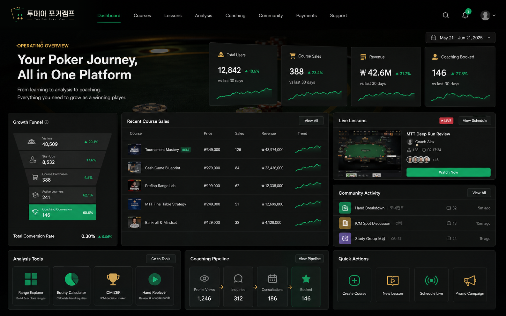

한국형 프리미엄
포커코칭 사이트
검증된 레귤러와 코치를 등록하고 강의, 커뮤니티, 1:1 코칭을 상품화합니다.

Main Site ↗Two Pair Poker Camp · Business Deck
한국형 RUN IT ONCE 의 시작.

체계적이고 투명한 시스템을 통해 회사와 코치 양쪽다 만족하는 구조로 어느쪽도 EV손실없이, 위닝하는 구조를 구축하겠습니다.
검증된 레귤러와 코치를 등록하고 강의, 커뮤니티, 1:1 코칭을 상품화합니다.
샘플 강의와 핸드리뷰 뿐만아니라 회사의 컨텐츠 제작능력과 마케팅 능력을 활용해, 많은 수강생을 유입할 수 있게 합니다.
코치의 전문성과 아월리를 최대한 서포트하기위해 회사가 커리큘럼, 편집, 판매 페이지를 보조합니다.
각기 다른 코치들의 성향에 따라 강의 제작 기여도에 따라 수익분배를 선택하는 구조로 코치 신뢰를 확보합니다.
수강생은 누구에게 배워야 할지 모르고, 코치는 콘텐츠 제작과 운영 부담 때문에 코칭을 안정적인 상품으로 만들기 어렵습니다.
안정적인 컨텐츠 제작능력과 플랫폼 운영으로 커뮤니티를 확보하고 최대한 많은 트래픽을 발생시킵니다 다양한 사이트 기능과 아티클을 제공합니다

구독제와 커뮤니티는 시장 반응을 확인한 뒤 확장하고, 먼저 코치 한 명의 성공 사례를 만드는데 집중하겠습니다
프리플랍, 포스트플랍, MTT, ICM, 핸드 리뷰 등 주제별 혹은 패키지 구성판매
유입된 코칭생을 코치와 연결하고 예약, 결제, 후기 관리를 지원.
코치의 의향을 적극적으로 반영해서 유기적으로 상품을 설계할 수 있는 기반을 마련하겠습니다.
월간 라이브 세미나, 그룹 코칭, Q&A, 커뮤니티를 중장기 상품으로 전개.
투명한 시스템 구축으로 유기적으로 원하는 수익분배 모델을 선택할 수 있게 돕겠습니다
코치님과 함께 국내 유일무이의 홀덤 코칭플랫폼으로써 성장하고자 합니다
최소 100방 레귤러 기준으로 검증된 국내 포커프로 커뮤니티로써의 브랜드를 약속합니다. TPC에 소속되어 있다는것만으로도, 추가적인 검증이 필요하지 않게끔 노력하겠습니다.
기획, 촬영, 편집, 썸네일, 판매 페이지를 플랫폼이 지원합니다.
플레이루틴과 세션에 방해되지 않는 다양한 상품구성으로 안정적인 추가수익루트 확보.
검증된 레귤러 포커커뮤니티의 형성으로 포커프로 로써의 브랜드 구축
오프라인 접점, 대회 필드, 온라인 포커 시장은 모두 성장 신호를 보입니다. 문제는 수요가 없는 것이 아니라, 검증된 코치와 학습 채널이 표면에 드러나 있지 않다는 점입니다.
2024년 기사 기준 전국 홀덤펍 매장 수. 신규 플레이어가 처음 포커를 접하는 오프라인 입구입니다.
APT Incheon 2025 메인 이벤트 엔트리. 총상금은 약 ₩2.77B로 한국 개최 기준 기록적 필드였습니다.
APT Korea 메인 이벤트 상금풀은 2024년 약 $1.7M에서 2025년 약 $2.0M으로 증가했습니다.
글로벌 온라인 포커 시장의 2025~2030 CAGR 전망. APAC은 가장 빠른 성장 지역으로 제시됩니다.
신규 홀덤 플레이어가 강의와 코칭을 사지 않는 것이 아니라, 믿을 수 있는 기준과 접근 경로를 찾지 못하고 있는 상태에 가깝습니다.
영어에 자신있지 않은 국내 홀덤플레이어들은 제대로된 학습 경로를 따라가기 어렵습니다 경쟁적인 플랫폼에서의 플레이나 해외 양질의 컨텐츠에 접근조차 하지 못합니다 혹은 너무 정보에 취우쳐져 재미없는 컨텐츠로 유입을 유치하지 못합니다
TPC 리서치 기준 국내 홀덤 관련 공개 유튜브 채널 수
중복 포함 구독자 총량. 관심의 총량은 이미 작지 않습니다.
최근 30일 내 업로드가 확인된 채널. 시장은 멈춰 있지 않습니다.
명확히 플레이어 교육형으로 분류되는 채널. 학습 공급은 관심 대비 부족합니다.
구독자 관심 총량
검색으로 바로 발견되는 플레이어 교육형 공급
이 모든 유저들의 일정 비율은 잠재적 그라인더의 씨앗이고 저희는 이 물꼬를 TPC로 틀고자합니다.
홀덤 접점과 콘텐츠 소비는 증가하고 있지만, 신규 플레이어가 따라갈 학습 경로는 아직 분산되어 있습니다.
마케팅, 결제, 강의 열람, 코칭 연결, 커뮤니티, A/S를 한 흐름으로 묶어 전환율을 높입니다.
코치의 제작 기여도와 플레이 루틴을 고려해 강의, 코칭, 맞춤형 상품의 수익분배를 유연하게 설계하겠습니다.
저희 TPC는 누구보다 레귤러의 마음, 피쉬의 마음. 양쪽을 모두 이해해서 코치생은 신뢰할 수 있는 국내 포커플레이어를 발견하고, 코치는 플레이를 해치지 않으면서도 장기적인 브랜드와 수익을 확보하는 구조를 만들고자합니다. 궁금하신점이 있다면 문의섹션도 참고해주시고 오른쪽 연락처로 연락주시면 답변드리겠습니다.
아래 질문들은 제안받은 코치가 실제 계약과 참여를 판단하기 전에 확인할 가능성이 높은 항목입니다. 미팅 전 답변 기준을 준비해두면 신뢰도와 협상 속도가 올라갑니다.
강의 제작 기여도와 플랫폼의 투입 범위에 따라 달라집니다. 회사 주도형, 공동 제작형, 코치 주도형, 1:1 코칭 연결형을 나누고 각 모델별 기본 배분율을 먼저 제시한 뒤 코치의 인지도와 수요, 제작 참여도를 반영해 협의합니다.
원칙적으로 결제 수수료, 환불, 할인 적용 기준을 사전에 문서화한 뒤 정산합니다. 광고비나 별도 제작비를 공제해야 하는 경우에는 강의별로 사전 합의하고, 정산 내역을 코치가 확인할 수 있게 제공하는 방향을 기본으로 합니다.
회사 주도형은 녹음, 출연, 핵심 코멘트 중심으로 짧게 가져가고, 공동 제작형은 커리큘럼 회의와 예제 핸드 선정 시간이 추가됩니다. 코치 주도형은 코치가 강의 내용을 더 많이 설계하는 대신 배분율을 높게 가져가는 구조입니다.
플랫폼은 상품성, 난이도, 영상 품질을 관리하고 코치는 전략적 정확성과 플레이어 관점을 책임지는 구조를 지향합니다. 최종 공개 전에는 코치 검수 단계를 두고, 코치의 이름으로 나가는 콘텐츠가 코치의 기준에 맞는지 확인합니다.
실제 계약 전 권리 귀속, 사용 기간, 2차 활용 범위를 별도로 명시해야 합니다. 유튜브 샘플, 쇼츠, 광고 소재로 활용할 수 있는 범위도 사전 합의하고, 계약 종료 후 이름과 영상 사용 가능 여부를 문서로 남기는 것을 기본 원칙으로 봅니다.
코치의 전문 영역, 수강생 수준, 코칭 목적을 기준으로 연결합니다. 코칭 가격과 가능 시간은 코치 의견을 우선 반영하고, 플랫폼은 문의, 예약, 결제, 후기, 재구매 관리를 지원합니다.
플랫폼이 1차 고객 응대와 정책 안내를 맡는 방향입니다. 다만 코칭 품질, 세션 진행 여부, 일정 변경 같은 코치 판단이 필요한 사안은 코치와 협의해 처리합니다. 환불 기준은 상품 등록 전에 미리 정리해야 합니다.
최소 기준은 검증 가능한 플레이 실력, 설명 능력, 브랜드 리스크 관리 가능성입니다. 100방 이상 위닝 레귤러를 핵심 기준으로 보되, 코치별 전문 영역에 따라 라이브 필드, 토너먼트, 핸드 리뷰, 입문 교육 등 강점을 다르게 평가할 수 있습니다.
초기에는 비독점 협업을 기본으로 두는 편이 현실적입니다. 단, TPC와 공동 제작한 강의의 동일 콘텐츠 재판매, 가격 충돌, 브랜드 혼선을 막기 위한 최소한의 범위는 계약서에 명시하는 것이 좋습니다.
서비스는 실제 베팅이나 게임 참여 중개가 아니라 교육, 핸드 분석, 코칭, 커뮤니티 운영을 중심으로 설계합니다. 판매 전 약관, 책임 범위, 결제 정책, 콘텐츠 표현 방식은 별도 법무 검토가 필요합니다.
이 페이지는 미팅용 기본 답변 초안입니다. 실제 계약 전에는 정산표, 권리 조항, 환불 정책, 법무 검토 항목을 별도 문서로 확정해야 합니다.